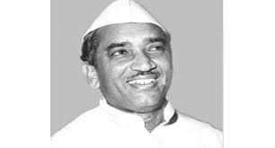

Others
Govind Ballabh Pant
Pandit Govind Ballabh Pant (10 September 1887 – 7 March 1961) was an Indian freedom fighter and one of the architects of modern India. Alongside Mahatma Gandhi, Jawaharlal Nehru and Vallabh Bhai Patel, Pant was a key figure in the movement for India's Independence and later a pivotal figure in the Indian Government. He was one of the foremost political leaders of Uttar Pradesh (then known as United Provinces) and a key player in the unsuccessful movement to establish Hindi as the national language of India. To honour his exemplary services to the nation, Pant received India's highest civilian honour, the Bharat
Ratna, in 1957 (he was one of the first recipients). Govind Ballabh Pant was born on 10 September 1887 in Khoont village on the slopes of Shyahi Devi hill near Almora. There are many institutes in Uttarakhand bearing his name: Govind Ballabh Pant University of Agriculture and Technology, Pantnagar (the first agricultural university of India), Govind Ballabh Pant High Altitude Zoo, Nainital, Govind Ballabh Pant Engineering College, Pauri Garhwal, Uttarakhand, Govind Ballabh Pant Children Hospital, Srinagar Garhwal and Govind Ballabh Pant Institute of Himalayan Environment and Development, Almora, Uttarakhand.
Hemvati Nandan Bahuguna

Hemvati Nandan Bahuguna (also known as "Himalaya ka Putra" meaning "Son of the Himalayas") (25 April 1919 – 17 March 1989) was a Congress Party leader and former Chief Minister of Uttar Pradesh, he later joined Bharatiya Lok Dal and worked with Charan Singh. He was born on 25 April 1919 in Bughani, Pauri Garhwal, Uttarakhand. His son Vijay Bahuguna served as the Chief Minister of Uttrakhand and was also a former judge of Allahabad and Bombay High Court. Daughter Rita Bahuguna Joshi is also in politics and was UP Congress Chief. She was also Mayor of Allahabad. Currently she is member of Bharatiya Janata Party and minister in Yogi cabinet. There are many institutes in Uttarakhand bearing his name: Hemwati Nandan Bahuguna Garhwal University, Uttarakhand's largest university in Srinagar, Pauri Garhwal and Hemwati Nandan Bahuguna Uttarakhand Medical Education University, in Dehradun, Uttarakhand.
Murli Manohar Joshi
Murli Manohar Joshi (born 5 January 1934) is an Indian politician, a leading member of the Bharatiya Janata Party (BJP) of which he was the President between 1991 and 1993, and the current Member of Parliament for Kanpur. He later became the Union Human Resources Development minister in the National Democratic Alliance government. Joshi was awarded Padma Vibhushan, the second-highest civilian award, in 2017 by the Government of India. Joshi was born on 5 January 1934, hailing from the Kumaon Hills region of Nainital which today form a part of the state of Uttarakhand. Joshi had his early education in Almora.
N. D. Tiwari
Narayan Datt Tiwari (born 18 October 1925) is an Indian politician. He was formerly in Praja Socialist Party and later joined Indian National Congress. He was thrice Chief Minister of Uttar Pradesh (1976–77, 1984–85, 1988–89) and once Chief Minister of Uttarakhand (2002–2007). In 1986–1987, he served in Prime Minister Rajiv Gandhi's cabinet as Minister for External Affairs. He was serving as Governor of Andhra Pradesh from 2007 until 2009. He's the only Indian to
have served as Chief Minister of 2 states. Narayan Datt Tiwari was born in 1925, in the village of Baluti, Nainital district. His father Poornanand Tiwari was an officer in the forest department, and who later resigned and joined the Non-cooperation movement. Tiwari received his education at various schools including, M.B. School, Haldwani and C.R.S.T. High School, Nainital.
Harish Rawat
Harish Chandra Singh Rawat (born 27 April 1948) is an Indian politician who was Chief Minister of Uttarakhand from 2014-2017. A five-time Member of Parliament, Rawat is a leader of the Indian National Congress party. As a member of 15th Lok Sabha, Rawat served as Union Minister of Water Resources in the
cabinet of Prime Minister Manmohan Singh from 2012 to 2014. He also worked as Minister of State at the Ministry of Parliamentary Affairs, Ministry of Agriculture, Ministry of Food Processing Industries (2011-2012) and Ministry of Labour and Employment (2009-2011). Harish Rawat was born in Mohanari village, near Chaunalia in Almora District on 27 April 1948 in a Rajput family.